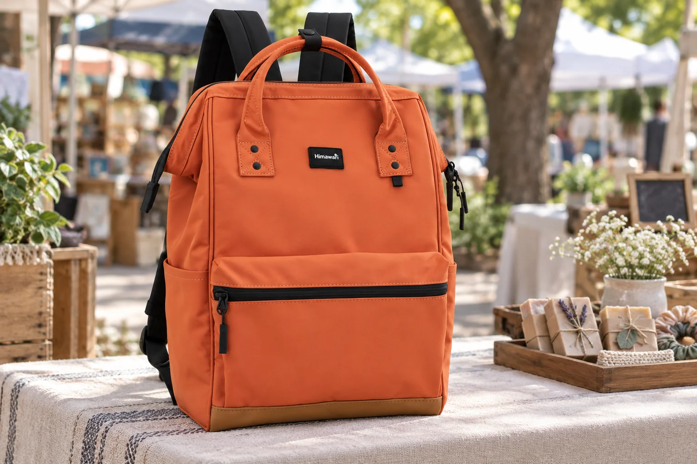
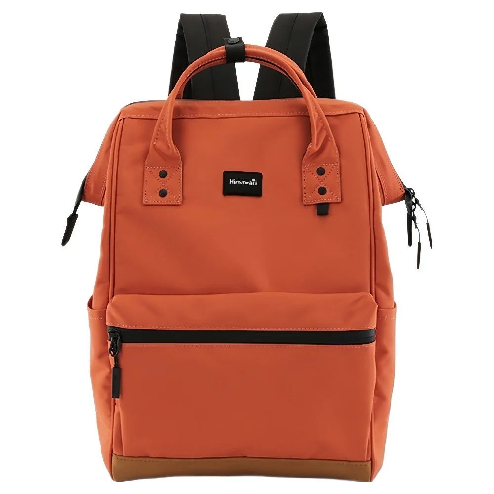

플리마켓 판매대 밖에 남겨둘 개인 짐

플리마켓의 준비는 집에서 물건을 상자에 넣을 때와 행사장에서 꺼낼 때의 순서가 다릅니다. 판매할 상품과 가격표를 먼저 펼친 뒤 개인 지갑을 찾으려면 운반 가방 전체를 다시 열게 될 수 있습니다. 하루 동안 부스에 머무는 사람에게는 판매용 물건을 정리할 자리와 개인 짐을 남겨둘 자리가 각각 필요합니다. 백팩을 어느 쪽에 사용할지 정하면 개장 준비부터 철수까지 꺼낼 묶음이 분명해집니다.
행사 안내에서는 제공되는 비품과 직접 가져갈 물건부터 확인합니다. 테이블을 쓰는 방식과 부스 크기, 입장과 철수 시간은 주최 측 공지를 기준으로 봅니다. 행사장에 따라 반입하거나 설치할 수 있는 물건이 다를 수 있으므로 이전 참여 목록을 그대로 가져오지 않습니다. 제공하는 것이 확인되면 집에서 운반해야 하는 상품과 비품의 범위가 줄고, 백팩에 꼭 남길 개인 소지품도 구분하기 쉽습니다.
개장 전에 나눌 묶음
상품은 진열과 회수에 맞는 상자나 운반 가방에 정리하고, 가격표와 포장 봉투는 판매대에서 사용할 묶음으로 준비합니다. 가격표를 꺼내려면 상품을 먼저 내려놓아야 하는 배치라면 설치 순서를 바꿔볼 수 있습니다. 주최 측이 확인할 안내나 참여 자료가 있다면 개인 짐과 함께 바로 찾을 수 있는 위치에 둡니다. 어떤 물건을 어느 순간에 꺼낼지 기준으로 정리하면 개장 전에 여러 가방을 한꺼번에 펼칠 필요가 줄어듭니다.
열쇠와 교통카드, 휴대전화는 판매대의 소품처럼 놓지 않고 개인 물건으로 관리합니다. 상품이 전시된 면에서 지갑을 꺼내거나 개인 파우치를 펼치면 판매할 물건과 섞일 수 있습니다. 결제와 관련해 사용할 도구가 있다면 행사 운영 방식에 따라 별도 자리를 정하세요. 세부 결제 조건이나 판매 규정은 주최 측과 이용 서비스의 안내를 확인하며, 백팩을 누구나 접근하는 진열대의 수납함처럼 쓰지 않는 편이 관리 범위가 분명합니다.
야외 행사라면 작업하는 테이블과 가방을 둘 바닥의 상태를 함께 봅니다. 비나 바람에 대비한 덮개를 사용할 수 있는지는 행사 안내를 확인하세요. 개인 짐을 어디에 두든 통로와 다른 판매자의 공간을 침범하지 않는지 살펴봅니다. 상품을 보충하려고 이동해야 하는 경우에는 백팩을 그 자리에 계속 둘지 직접 가져갈지 판단합니다. 자리를 비우기 전에 개인 소지품을 확인할 수 있는 방식이 필요합니다.
행사 당일 Himawari No.124 제품 정보의 모델을 개인 가방으로 참고한다면 판매용 물건과 역할을 나누는 구성을 생각할 수 있습니다. 가격표와 포장재는 판매대에서 쓸 묶음으로 준비하고 백팩에는 열쇠와 지갑, 집결 안내를 남깁니다. 휴식 시간에 개인 물건을 찾을 때 상품 상자를 열지 않아도 되도록 하는 방식입니다. 진열을 마친 뒤 자신의 가방이 어느 위치에 있는지 확인하면 운영 중 다시 찾을 범위도 분명해집니다.

운영 중에 다시 찾을 것
개장 뒤에는 매번 전체 짐을 펼치기보다 자주 쓸 물건을 판매대의 허용된 위치에 준비합니다. 가격표를 수정할 필기구나 추가 포장재가 필요하다면 실제 사용할 만큼만 꺼내고 예비분은 구분해둡니다. 개인 휴대전화로 안내를 확인하는 경우에는 사용 뒤 돌아갈 위치를 정합니다. 상품을 집어 보여주는 동작과 개인 소지품을 찾는 동작이 섞이지 않으면 물건이 어느 묶음에 있는지 알아보기 쉽습니다.
수량을 기록할 계획이라면 시작할 때의 수량과 남은 물건을 구분할 방법을 정합니다. 복잡한 장부가 필요한 것이 아니라 같은 종류의 물건이 몇 개씩 있었는지 알아볼 정도의 기록도 가능합니다. 예를 들어 상품별 수량을 종이에 적었다면 변경할 때 어디에 표시할지 정하고 그 종이를 개인 메모와 섞지 않습니다. 이는 특정 판매 결과를 예측하는 방식이 아니라 철수 때 빠진 물건을 확인할 기준을 만드는 준비입니다.
다른 판매자와 비품을 함께 쓰면 누구의 물건인지도 구분해야 합니다. 자신의 테이프나 포장재를 공동 작업 면에 두었다면 마감 때 돌려받을 위치를 생각할 수 있습니다. 빌린 비품은 반환할 물건의 목록에 남기고 개인 백팩에 임시로 넣지 않는 편이 확인하기 쉽습니다. 행사 중 받은 안내 종이가 늘어나면 오래된 것과 현재 적용할 안내를 구분해두세요. 주최 측의 변경 안내가 있다면 그 내용을 확인하고 운영에 반영합니다.
철수는 남은 상품부터
마감할 때에는 진열된 상품과 예비 상품을 먼저 모아 수량을 확인합니다. 그다음 가격표와 포장재, 빌린 비품을 각각 정리합니다. 남은 물건을 급히 백팩의 빈 공간에 넣으면 집에서 다시 판매용과 개인용을 나누어야 합니다. 처음의 운반 묶음을 유지할 수 있도록 상품은 제 포장으로 돌려놓고 깨지거나 모서리가 있는 물건은 실제 상태에 맞는 운반 방법을 확인하세요. 행사장의 처리 규칙에 따라 쓰레기도 정리합니다.
개인 가방에서는 열쇠와 지갑, 휴대전화와 행사 안내를 확인합니다. 판매대 아래나 옆에 두었던 가방을 챙길 때 주변에 작은 물건이 남았는지 살펴보세요. 테이블과 바닥, 비품 반납 장소를 돌아본 뒤 주최 측이 안내한 동선으로 철수합니다. 운반 상자가 처음보다 비어 있어도 물건 개수를 확인하는 과정은 필요합니다. 상자 외에 접힌 천이나 별도 포장 봉투를 들고 왔다면 그 묶음도 함께 셉니다.
귀가 뒤에는 남은 상품과 기록을 대조할 수 있습니다. 가격표나 포장재가 백팩에 들어왔다면 판매용 묶음으로 옮기고, 열쇠와 개인 소지품은 평소 자리로 돌려놓습니다. 준비한 포장재가 얼마나 남았는지와 부족했던 종류를 기록하면 다음 행사에서 실제 필요한 양을 판단하기 쉽습니다. 상품을 정리한 상자와 개인 백팩이 다시 나뉜 상태에서 작업을 마치세요. 다음 행사에서는 주최 측의 새 안내를 먼저 읽고 이번에 남긴 기록을 참고하면 됩니다.